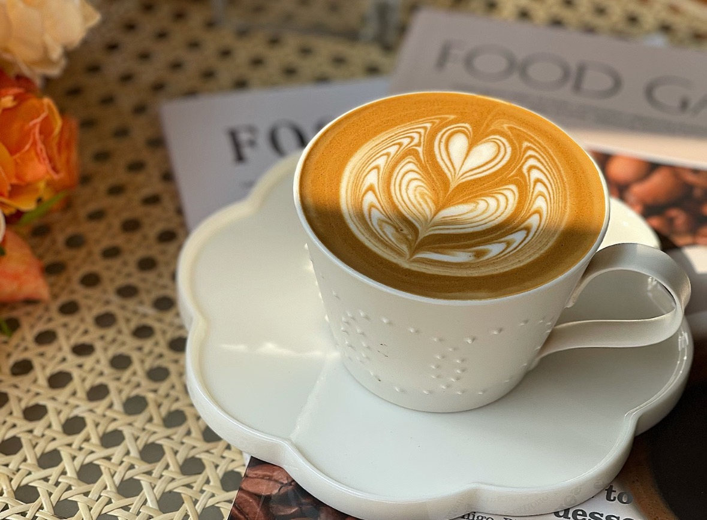

意式咖啡的牛奶艺术：从完美蒸煮到精致拉花
意式咖啡不仅仅是浓缩咖啡的艺术，牛奶的蒸煮和拉花技巧同样是其不可或缺的组成部分。一杯完美的拿铁或卡布奇诺，离不开丝滑的奶泡和精美的拉花。本篇将带你探索意式咖啡中的牛奶艺术。
蒸煮牛奶
想要轻松掌握牛奶打发过程，得先掌握影响打发效果的四个关键变量：
- 蒸汽压力
- 蒸汽棒位置
- 牛奶的打发与融合
- 牛奶温度（时间把控）
蒸汽压力
标准：1.5—1.7bar
商用级别的意式咖啡机通常使用这种强度的蒸汽压力，能够提供足够的动力来制作浓郁、丝滑的奶泡。不过，想要做出细腻绵密的口感，关键在于掌握好打发过程中空气的注入量，这样才能让牛奶的质地更加顺滑。
蒸汽棒的使用方法
首先使用冷藏牛奶，并在每次使用前先释放蒸汽棒内的残留水分。将蒸汽棒的尖端稍微浸入牛奶表面以下，并让蒸汽棒的角度偏向奶缸的一侧。将旋钮旋转到底，完全打开蒸汽。刚开始的几秒钟，保持蒸汽棒尖端靠近牛奶表面，以便引入适量空气，这时你应该能听到轻柔的“嘶嘶”声。
牛奶的打发与融合
打发牛奶的关键就是把空气和热量充分融入牛奶，这样才能做出细腻的奶泡。当牛奶体积稍微膨胀变高后，将蒸汽棒稍微深入牛奶中，并保持牛奶在奶缸中形成漩涡。这样可以让空气泡与牛奶充分混合，使奶泡更加细腻顺滑，口感更好。
牛奶温度（时间把控）
把牛奶加热到摸起来感觉有点烫手的程度，大概需要 8-10 秒（温度在 54°C 左右），这个温度是打出好奶泡的最佳状态，口感也会更好。
拿铁拉花技巧
掌握了完美的奶泡，接下来就是拿铁拉花的艺术。拉花不仅能提升咖啡的视觉美感，也能体现咖啡师的专业水准。
高起点倒奶
奶缸离杯子大概 5 厘米高，用细而稳的流速把牛奶直接倒进浓缩咖啡的中心。这样能让牛奶和咖啡更好地融合，同时让杯里的液体慢慢升高，为后续图案的形成打好基础。
降低奶缸，开始拉花
当杯子里的咖啡和牛奶混合到快半杯时，把奶缸放低，让奶嘴几乎贴到液面，加快倒奶的速度，继续瞄准中心倒入或轻轻抖动奶缸，这时候，拉花的图案就会慢慢出现。
高收尾，完成图案
快倒完时，把奶缸往前推一下，然后快速提起，这样会在图案中间拉出一条细线，形成心形或者其他图案的尖角，拉花就完成啦！
通过反复练习，你也能制作出令人惊艳的拿铁拉花。